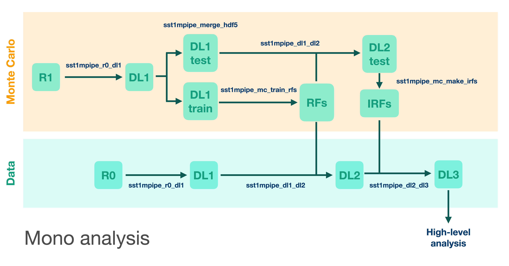
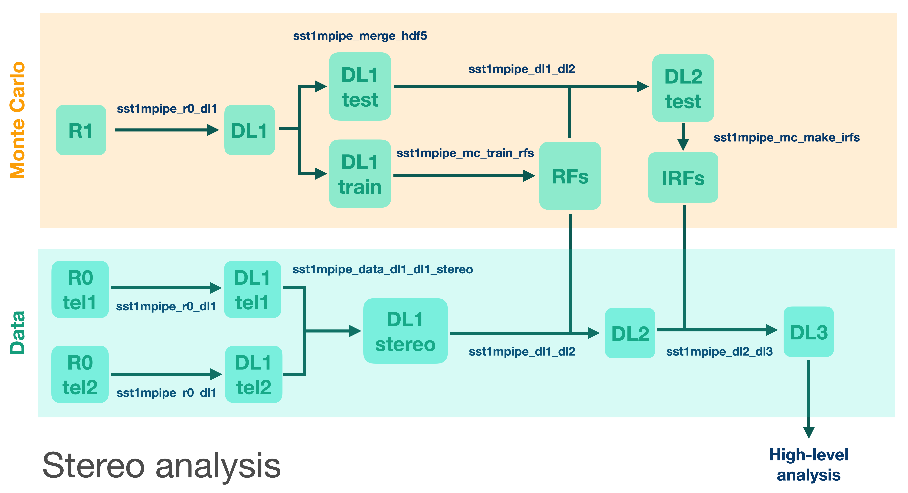

Introduction
Installation
The advanced package and environment management system, Anaconda, Miniconda or Mamba, is needed to be installed first.
The Mamba is recomended due to some (quite often occured) stucks at solving environment on Anaconda. Up to now Mamba works well.
Set up environment based on Mamba
Note
For more details see https://github.com/conda-forge/miniforge#mambaforge
curl -L -O "https://github.com/conda-forge/miniforge/releases/latest/download/Mambaforge-$(uname)-$(uname -m).sh"
bash Mambaforge-$(uname)-$(uname -m).sh
or
wget "https://github.com/conda-forge/miniforge/releases/latest/download/Mambaforge-$(uname)-$(uname -m).sh"
bash Mambaforge-$(uname)-$(uname -m).sh
For users
download stable version of sst1mpipe (latest version = 0.9.0)
create and activate conda environment
install sst1mpipe
SST1MPIPE_VER=0.9.0
wget https://github.com/SST-1M-collaboration/sst1mpipe/archive/refs/tags/v$SST1MPIPE_VER.tar.gz
tar -xvf v$SST1MPIPE_VER.tar.gz
cd sst1mpipe-$SST1MPIPE_VER
conda env create -n sst1m-$SST1MPIPE_VER -f environment.yml
conda activate sst1m-$SST1MPIPE_VER
pip install -e .
rm environment.yml
For developers
download latest development version from git repository
create and activate conda environment
install sst1mpipe
git clone git@github.com:SST-1M-collaboration/sst1mpipe.git
conda env create -f sst1mpipe/environment.yml
conda activate sst1m-dev
pip install -e sst1mpipe
Pre-installed conda environment on Calculus
If one prefers to work on Calculus, he/she may skip the pipeline installation completely and only activate preinstalled environment:
source /data/work/analysis/software/mambaforge/etc/profile.d/conda.sh
conda activate /data/work/analysis/software/mambaforge/envs/sst1m-$SST1MPIPE_VER
Analysis basics
sst1mpipe takes the raw waveforms in each camera pixel, calibrates them into the number of photoelectrons, and reconstructs the physical parameters of primary gamma-ray photons such as their energy and arrival direction. It also classifies events to suppress hadronic background. Standard reconstruction is performed using Random Forest regressors and classifiers, which are pre-trained on precise Monte Carlo simulations. sst1mpipe handles Monte Carlo and Random Forest training as well, and can be also used to estimate SST-1M performance. The data analysis is performed in several subsequent steps, where each data level is stored, and so any possible future reprocessing can start from any point in the chain. The data levels used in sst1mpipe follow the ctapipe data model:
Data Level |
Description |
File Format |
|---|---|---|
R0 |
Raw waveforms in each pixel (uncalibrated), |
ZFITS |
R1 |
Calibrated waveforms (in photoelectrons, pedestal subtracted) |
|
DL1 |
Integrated charge and peak position of the waveform in each pixel + Hillas parameters. |
HDF5 |
DL2 |
Reconstructed event parameters (energy, direction, primary type) |
HDF5 |
DL3 |
Photon lists (after selection and gammaness cut) + Instrument Response Functions |
FITS |
Scheme of data/MC processing the pipeline:
{kind=link}

{kind=link}

For a detailed description of all analysis steps, see: SST-1M analysis workflow.